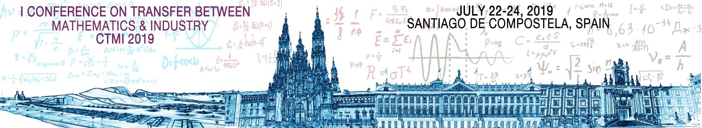
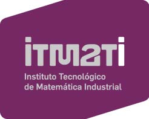
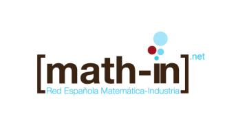
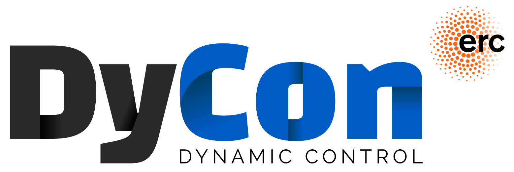

On behalf of the Scientific and Organizing Committees, we invite you to attend and participate at the 1st Conference on Transfer between Mathematics & Industry, CTMI 2019, which aims to enforce the interaction between academy and industry, leading to innovation in both fields and opening new channels for fostering the industry-academia collaboration.
This new initiative constitutes a unique space to promote and disseminate the mathematical tools of Statistics & Big Data and MSO (Modelling, Simulation and Optimization) and their industrial applications, to boost new research lines oriented to the needs of the industry, the renewal of curricula in this field, and the internationalization of the industry-academia collaboration. See our goals here.
The CTMI 2019 will take place from 22nd to 24th July 2019 in Santiago de Compostela, Spain. The event will be held in the Faculty of Mathematics at Rúa Lope Gómez de Marzoa, s/n, Campus Vida, 15782 Santiago de Compostela (map). This area lies within walking distance of the Santiago old town.
Prior registration is required. For more information, please click here. The registration deadline is June 30th, 2019.
The programme will include:
See the full programme here.
New deadlines: http://www.itmati.com/ctmi2019/deadlines.
All information will be updated on CTMI 2019 website: http://www.itmati.com/ctmi2019.
CTMI 2019 is co-organized between the Technological Institute for Industrial Mathematics, ITMATI, and the Spanish Network for Mathematics & Industry, math-in. The European Service Network of Mathematics for Industry and Innovation, EU-MATHS-IN, and the Enterprise Europe Network are collaborators of this international event.
This Conference is a satellite meeting of ICIAM 2019 that will be held the previous week at Valencia, Spain.
For all these reasons, we would like to have your presence at CTMI 2019, so that together make a success Conference, which help us to consolidate Mathematics as another branch on the scientific knowledge transfer to the companies.
 
The Spanish Network for Mathematics & Industry (math-in) & Repsol are pleased to announce the first edition of the math-in awards & math-in | Repsol award to distinguish outstanding PhD and MSc theses in Industrial Mathematics to be awarded at the 1st Conference on Transfer Between Mathematics and Industry, CTMI 2019, in Santiago de Compostela, Spain, July 22-24, 2019.
These awards, one for PhD thesis and two for MSc theses, will recognize the contributions of the candidates attending to the novelty of the project, the technology generated in their work, the development and use of new mathematical tools, as well as the benefits obtained by the company.
This award for one PhD thesis will recognize the contributions of the candidates attending to the novelty of the project, the technology generated in their work, the development and use of new mathematical tools, as well as the benefits obtained by the company. The PhD theses in the field of energy sector will have priority.
Every person who has presented a PhD or MSc thesis in Industrial Mathematics and got it approved at a University or a Research Organization in the European Union in 2017 or 2018 qualifies for the awards and can apply.
Candidates for the award must include in their applications the following documents: (All documentation will be sent in English)
An Open Call has been launched for candidates that are wishing to submit their applications.
Applications must be sent to info@math-in.net. Email subject:
The closing date for submissions is 26th April, 2019.
Math-in Awards: Each award includes an Award Certificate, a monetary prize to be determined its amount, and the cost of the conference registration for each PhD thesis and MSc thesis awarded.
Math-in | Repsol Award: The award includes an Award Certificate, a monetary prize of 1,500 €, and the cost of the conference registration for the PhD thesis Award.
It also includes an invitation to perform a stay/secondment at Repsol Technology Lab, in Móstoles (Madrid) for three months giving the opportunity for being integrated into one of Technology Lab projects during that time. For the stay/ secondment time there will be no additional allowances.
The math-in 2019 Awards will be awarded to the best one PhD thesis and the best two MSc theses, according to a Committee nominated by math-in.
The math-in | Repsol Award 2019 will be awarded to the best one PhD thesis, according to a Committee nominated by math-in & Repsol.
The Math-in Awards & Math-in | Repsol Award will be handed over during the CTMI 2019 Conference.
The best two PhD theses and the best two MSc theses will be presented at the Minisymposium IV: PhD & MSc Awards in Industrial Mathematics in the framework of CTMI 2019.
Pedro Alonso
Universidad de Oviedo,
Marta Peña
Universitat Politècnica de Catalunya)
http://www.ciem.unican.es, http://www.red-alama.es/
_____________________________________
La Red ALAMA de Álgebra Lineal, Análisis Matricial y Aplicaciones se creó en 2007 con la intención de estructurar una comunidad de científicos cuya investigación estuviera conectada con el Álgebra Lineal, el Análisis Matricial, la Teoría de Matrices y/o sus aplicaciones en contextos diversos. La Red ha venido desarrollando sus actividades de manera ininterrumpida desde entonces y ha sido financiada por distintos Planes Nacionales de I+D+I a través de distintas acciones complementarias, siendo reconocía como Red de Excelencia en la convocatoria de 2015.
En este contexto, del 17/05/2017 al 19/05/2017, se desarrollaron, en el Centro Internacional de Encuentros Matemáticos (CIEM) las Jornadas Ingeniería para Matemáticas IngxMat (Eng2Math).
En la convocatoria MINECO 2017 para «Redes de Excelencia», se ha concedido a la Red ALAMA una acción dinamizadora de dos años (MTM2017-90682-REDT). Su objetivo 7 es «contribuir a la mejora de la docencia del Álgebra Lineal, en sus vertientes teórica y aplicada, en las universidades españolas».
A tal efecto, entre las actividades de la Red se incluye «consolidar las actividades para la mejora de la docencia del Álgebra Lineal con la celebración de nuevas jornadas en las que se discutan iniciativas para mejorar la puesta al día del currículo y la mejora docente, resultando también interesante analizar la docencia de nuestra disciplina en los estudios preuniversitarios».
Es bien conocido que, para conseguir una mayor motivación y aprovechamiento por parte del estudiantado de ingenierías, conviene contextualizar las matemáticas mediante aplicaciones inmediatas a las disciplinas de la carrera. Por ejemplo, modelizando matricialmente problemas de la ingeniería y aplicando a continuación técnicas de cálculo matricial para su estudio y resolución. Ello requiere por parte del profesorado, no sólo el conocimiento de los conceptos y técnicas matemáticas, sino también nociones de las distintas ramas de la ingeniería donde se aplican.
Teniendo en cuenta lo anterior, las Segundas Jornadas IngxMat2 (Eng2Math2) se conciben como una continuación de las anteriores, planteando un curso dirigido principalmente, pero no sólo, a los miembros de la Red temática ALAMA, orientado a la mejora de la docencia del Álgebra Lineal, en sus vertientes teórica y aplicada. En particular, tiene como objetivo principal ilustrar la enseñanza del Álgebra Lineal a través de distintos problemas de ingeniería.
En este contexto también se desarrollarán algunas conferencias plenarias que muestren la conexión entre las matemáticas y la ingeniería o la industria.
Las Jornadas se van a desarrollar en el Centro Internacional de Encuentros Matemáticos, CIEM, de Castro Urdiales, Cantabria, del 15 al 17 de mayo de 2019 (enlace aquí), y en ellas se incluye, además de las charlas recogidas en el programa, una sesión de «Otras aportaciones», donde los participantes podrán presentar sus experiencias sobre distintos aspectos de la enseñanza de las matemáticas en las diferentes ramas de la ciencia. Los participantes recibirán certificado de asistencia a las Jornadas, así como certificado de presentación de su aportación si hubiera lugar.
(Día 1) miércoles 15 mayo (tarde)
(1.0) 16:15–16:45 Registro
(1.1) 16:45–17:00 Presentación
(1.2) 17:00–18:15 Motivando la enseñanza a distancia de los cursos de Álgebra en la
universidad (Enrique Castillo, Real Academia de Ingeniería, Real Academia de Ciencias
Exactas, Físicas y Naturales)
(1.3) 18:15–19:30 Aplicaciones de las matemáticas en la industria (Mikel Lezaun,
Universidad del País Vasco)
(Día 2) jueves 16 mayo (mañana y tarde)
Mañana:
(2.1) 09:15–10:30 Sistemas lineales determinados por una secuencia de valores
consecutivos de los estados (Josep Ferrer, Universidad Politécnica de Catalunya)
(2.2) 10:30–11:45 Cómo mejorar el PageRank de una web local(Carlos Marijuan,
Universidad de Valladolid)
11:45–12:15 Café
(2.3) 12:15–13:30 Una relación históricamente problemática: las matemáticas en
las ingenierías (Guillermo Lusa, Universidad Politécnica de Catalunya)
13:30–15:30 Comida (Hotel Las Rocas)
Tarde:
(2.4) 15:30–16:45 Recursos motivadores en el aula (Marisa Serrano, Universidad de
Oviedo)
16:45–17:15 Café
(2.5) 17:15–18:30 Numerical Factory, el condimento numérico de las matemáticas
para las ingenierías (Antoni Susín, Universidad Politécnica de Catalunya)
(2.6) 18:30–19:45 «Good vibration»: de los Beach Boys al Álgebra Lineal (Araceli
Queiroga-Dios, Universidad de Salamanca)
21:30 Cena (Hotel Las Rocas).
(Día 3) viernes 17 mayo (mañana)
(3.1) 09:30–10:45 La educación matemática en la sociedad de la ciencia de
datos (Luis J. Rodríguez-Muñiz, Presidente de la Comisión de Educación de la
RSME)
10:45–11:15 Café
(3.2) 11:15–13:30 Otras aportaciones
Desde la Red ALAMA queremos animaros a participar en las Jornadas, seáis o no miembros de la Red, ya que entendemos que es un buen momento para reflexionar sobre una tarea tan importante como es la tarea docente.
Pedro Alonso, palonso@uniovi.es, Marta Peña, marta.penya@upc.edu.
Fernando de Terán Vergara
Universidad Carlos III de Madrid,
___
La red temática de Álgebra Lineal, Análisis Matricial y Aplicaciones (ALAMA) anuncia la celebración de las Quintas Jornadas ALAMA, centradas en el Álgebra Lineal Numérica (ALN).
Las jornadas tendrán lugar en la Universitat Politècnica de València, los días 17 y 18 de junio de 2019, y consistirán en 6 conferencias de dos horas sobre diversos ámbitos y aplicaciones del ALN. En concreto, versarán sobre precondicionamiento de matrices y algunas de sus aplicaciones, funciones matriciales para grafos y redes, software para ALN, problemas de valores y vectores propios no lineales, incluyendo aplicaciones en minería de datos y aprendizaje con grafos, y matrices signo regulares.
Para más información, y para acceder a la inscripción, se puede consultar el enlace http://red-alama.es/jornadas_ALN2019/.


Cofinanciación de Estancias 2019.
Plazo de presentación de solicitudes: Del 15 marzo 2019 al 10 diciembre 2019 a las 14h00’.
Cofinanciación de actividades científicas 2019.
Plazo de presentación de solicitudes: Del 15 marzo 2019 al 17 mayo 2019 a las 14h00’.
Doc Course: Geometric Analysis - Grants for students.
Plazo de presentación de solicitudes: Hasta el 30 de abril de 2019..
_____________________________________ ◇◇◇_____________________

The walls of our offices are filled with blackboards full of formulas that look like real works of art, so we have decided to look for the best way to immortalise them: a photography contest! (see Figure 11 below).
On the occasion of Pi Day and our 10th anniversary, we are launching a competition in which we will look for the most creative and interesting mathematical board. Show us what you can do with the chalk or the marker, you can win a fantastic prize!
To participate, you just have to:
The contest will be open until May 14th, 2019 and we will announce the winners on June 10th.

The Chair of Computational Mathematics led by Enrique Zuazua (Universidad Autónoma de Madrid, Spain - DeustoTech Research Center, Bilbao, Basque Country, Spain) offers a postdoctoral position to carry out mathematical and computational research, with excellent facilities within a world-wide academic and industrial-technological network. The duration of the contract is of 12 months, with a possible extension to one more year.
This position is funded by the European Research Council (ERC) Advanced Grant DYCON - Dynamic Control.
Research activities will be focused in some of the priority lines of the project (http://cmc.deusto.es/work-packages/ (https://eus.us18.list-manage.com/track/click?u=c40a3f2d1ae3d36e610da8f9c&id=70dd9d8526&e=e7b903aebd), that will be identified accordingly to the candidate’s profile.
Further information on the vacancy can be found in:
https://cmc.deusto.eus/postdoc-dycon-uam/ (https://eus.us18.list-manage.com/track/click?u=c40a3f2d1ae3d36e610da8f9c&id=325ed652a0&e=e7b903aebd)
Contact: ccm-offers-group@deusto.es for further information.
El congreso NumHyp2019, Numerical methods for hyperbolic problems 2019, se celebrará en Málaga del 17 al 21 de junio de 2019.
Se trata de la sexta edición de una serie bianual de congresos internacionales que se centran en los últimos avances en la aproximación numérica y las aplicaciones de las ecuaciones en derivadas parciales hiperbólicas.
NumHyp19 es un encuentro satélite de ICIAM 2019, así como una actividad de la red europea ModCompShock.
Actualmente están abiertos el plazo de inscripción y recepción de resúmenes. Está prevista la concesión de ayudas a un número limitado de estudiantes. Toda la información relativa al encuentro se puede consultar en la web http://eventos.uma.es/go/NumHyp19.
Student transition from school-level mathematics to university-level mathematics, often referred to as the secondary-tertiary transition (STT) is an enduring, complicated and multi-faceted process. STT is a long-standing issue of concern, which has merited significant attention in mathematics education research and practice. At its 2018 meeting in Cyprus, the EMS Education Committee recognized that our knowledge about successful ways of dealing with STT is still insufficient and that moving forward requires a large-scope effort on the part of all parties involved, including mathematics lecturers, school teachers, education researchers, policymakers and students in transition. As part of this effort, the Committee is conducting a survey among mathematicians. The goal of the survey is to collect and report to the mathematics community information needed in order to devise national and international actions that can essentially improve the state of the art with respect to STT.
We would be thankful to you if you distributed the survey below among the members of your national mathematical society. The completion of the survey takes about 15 minutes. The survey is open until September 15, 2019.
Additional thanks go to the members of your society for sending this invitation to further colleagues that might be interested in taking part in the survey and thus in contributing to the EMS collaborative effort to make substantial progress in relation to the STT.
For more background information about STT, click here.
With kind regards,
_____________________________________ ◇◇◇_____________________

La segunda edición de BYMAT - Bringing Young Mathematicians Together ya está en marcha. Después del éxito del año pasado, con más de 200 asistentes de 19 países diferentes y más de 75 instituciones, este año el congreso reunirá de nuevo, del 20 al 24 de mayo en el Instituto de Ciencias Matemáticas (Madrid), a estudiantes de doctorado, máster y últimos años de grado en matemáticas y campos afines.
El congreso contará con siete conferencias plenarias, charlas cortas, una sesión de posters y charlas y talleres sobre salidas profesionales, comunicación y divulgación de las matemáticas. Se tratarán las posibilidades de emprender una carrera científica fuera del mundo académico, la comunicación periodística de la investigación matemática, etc.
https://www.icmat.es/press%20outreach/press/Releases/N-18-05-18
https://www.icmat.es/congresos/2018/BYMAT/
_____________________________________ ◇◇◇_____________________
El Tercer Congreso Internacional sobre Finanzas Computacionales, ICCF2019, se celebrará en A Coruña, España, entre el 8 y el 12 de julio de 2019.
ICCF2019 se centra en aspectos científicamente innovadores y prácticos de las matemáticas financieras y la finanzas computacionales, y se espera contar con investigadores de centros de excelencia científica y expertos de las más prestigiosas empresas e instituciones financieras, con objeto de difundir los resultados más recientes y promover colaboraciones entre científicos, investigadores y usuarios de las finanzas y la economía. ICCF2019 es el tercero de una serie de congresos, tras las dos exitosas ediciones de Greenwich (2015) y Lisboa (2017).
ICCF2019 es un congreso satélite del ICIAM2019 de Valencia, que se celebra una semana después.
Para más información, te animamos a visitar la página web del congreso en
donde se puede encontrar información actualizada sobre conferenciantes plenarios, números especiales en revistas de impacto y fechas importantes.
_____________________________________ ◇◇◇_____________________
Jesús Martínez-Frutos y Francisco Periago Esparza
Universidad Politécnica de Cartagena
jesus.martinez@upct.es - f.periago@upct.es
http://www.upct.es/mc3/es/
______
Abstract. This book offers a direct and comprehensive introduction to the basic theoretical and numerical concepts in the emergent field of optimal control of partial differential equations (PDEs) under uncertainty. The main objective of the book is to provide graduate students and researchers with a smooth transition from optimal control of deterministic PDEs to optimal control of random PDEs. Coverage includes uncertainty modelling in control problems, variational formulation of PDEs with random inputs, robust and risk averse formulations of optimal control problems, existence theory and numerical resolution methods. The exposition is focused on running the whole path starting from uncertainty modelling and ending in the practical implementation of numerical schemes for the numerical approximation of the considered problems. To this end, a selected number of illustrative examples are analysed in detail along the book. A preprint version of the book, computer codes, written in MatLab, about the optimization algorithms presented in the book, and a number of videos about a course based on the book is available at http://www.upct.es/mc3/en/book/
Keywords. Uncertainty quantification, partial differential equations with random inputs, stochastic expansion methods, robust optimal control, risk averse optimization, numerical methods, numerical implementation.
Resumen. Este libro ofrece una introducción a los principales conceptos teóricos y numéricos en el emergente campo del control óptimo de Ecuaciones en Derivadas Parciales (EDPs) con incertidumbre. El principal objetivo del libro es proporcionar a estudiantes graduados e investigadores una transición suave desde el control óptimo de EDPs deterministas al control óptimo de EDPs aleatorias. Los temas tratados son: modelado de incertidumbre en problemas de control, formulación variacional de EDPs con datos de entrada aleatorios, formulaciones robusta y tipo aversión al riesgo de problemas de control, teoría de existencia y métodos de resolución numérica. Un selecto número de ejemplos son estudiados en detalle a lo largo de libro.
Una versión preliminar del libro, códigos escritos en MatLab sobre los problemas tratados y una colección de videos sobre un curso basado en el libro están disponibles en la web: http://www.upct.es/mc3/en/book/
Palabras clave. Cuantificación de la incertidumbre, EDPs con datos de entrada aleatorios, métodos de expansión estocásticos, control óptimo robusto y de aversión al riesgo, métodos numéricos, implementación numérica.